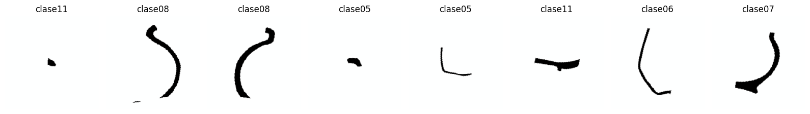
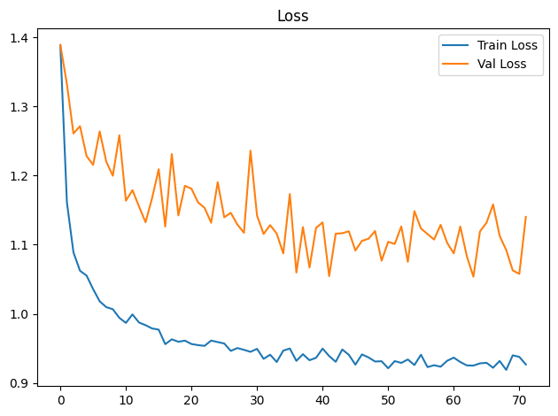
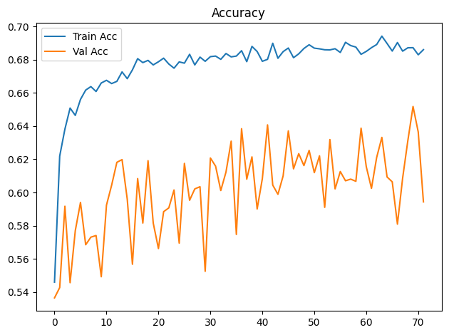
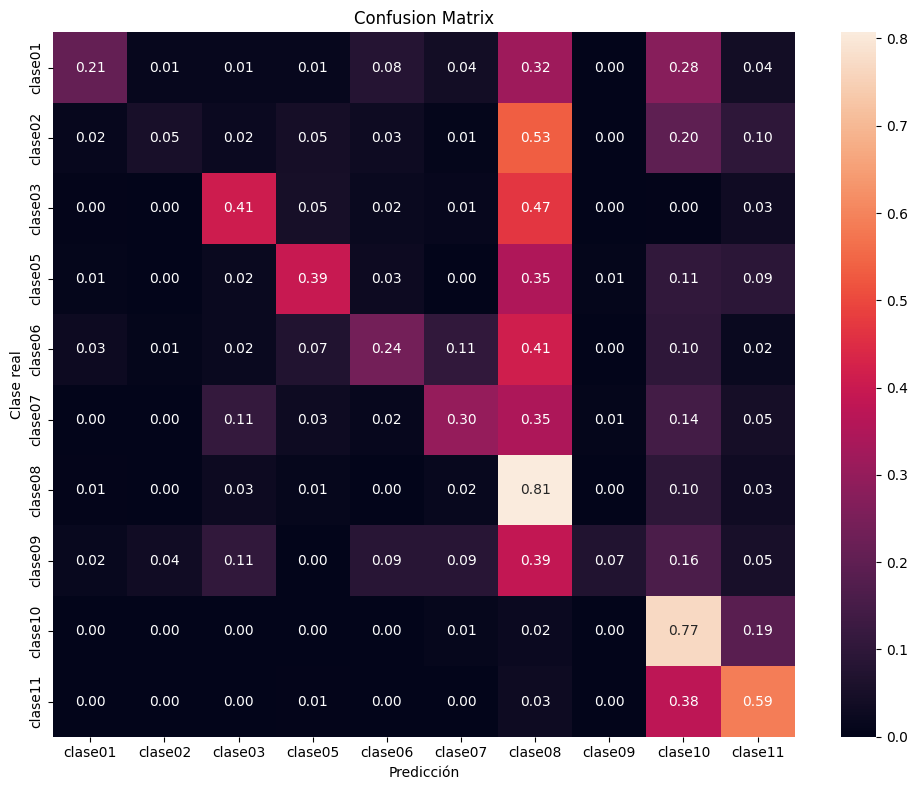

Dispositivo utilizado para procesamiento: CUDA - NVIDIA GeForce GTX 1650Entrenamiento de CNN ResNet-18 con Transfer Learning
Objetivos
- Construir un modelo baseline de clasificación mediante transfer learning con ResNet18 preentrenada.
- Entrenar inicialmente solo la capa clasificadora y descongelar
layer4enUNFREEZE_EPOCHcon una tasa de aprendizaje menor. - Aplicar transformaciones y aumentación de datos al conjunto de entrenamiento.
- Entrenar y validar el modelo registrando loss y accuracy por época.
- Detener el entrenamiento si val_loss no mejora suficientemente durante la paciencia configurada.
- Evaluar el modelo de la mejor época de validación sobre el conjunto de prueba.
- Analizar los resultados mediante accuracy, precision, recall, F1-score, reporte de clasificación y matriz de confusión normalizada.
- Guardar los pesos restaurados de la mejor época de validación (o los finales si se desactiva la parada anticipada).
Dispositivo para procesamiento
División de datos
La pertenencia de cada imagen a train, val o test se lee de la metadata generada por el notebook de división. La relación se realiza mediante ruta_relativa; por tanto, el split no se recalcula aunque cambien la semilla o los parámetros del entrenamiento.
Dataset seleccionado: unificado
Directorio de datos: /home/rafael/Dev/vasijas/data/12.unificado_divididos_en_train_val_y_test
Metadata de split: data/12.unificado_divididos_en_train_val_y_test/metadata.csv
Clases: clase01 clase02 clase03 clase05 clase06 clase07 clase08 clase09 clase10 clase11
Split persistido -> train: 14231, val: 3059, test: 3059
Epoch 1/300
Train Loss: 1.3885 | Train Acc: 0.5459 | Val Loss: 1.3890 | Val Acc: 0.5364
Tiempo de epoch: 0:01:30.211326
Epoch 2/300
Train Loss: 1.1613 | Train Acc: 0.6220 | Val Loss: 1.3326 | Val Acc: 0.5427
Tiempo de epoch: 0:01:22.887162
Epoch 3/300
Train Loss: 1.0889 | Train Acc: 0.6382 | Val Loss: 1.2609 | Val Acc: 0.5917
Tiempo de epoch: 0:01:22.933986
Epoch 4/300
Train Loss: 1.0623 | Train Acc: 0.6509 | Val Loss: 1.2714 | Val Acc: 0.5456
Tiempo de epoch: 0:01:23.167947
Epoch 5/300
Train Loss: 1.0554 | Train Acc: 0.6465 | Val Loss: 1.2282 | Val Acc: 0.5770
Tiempo de epoch: 0:01:23.009472
Epoch 6/300
Train Loss: 1.0358 | Train Acc: 0.6561 | Val Loss: 1.2154 | Val Acc: 0.5940
Tiempo de epoch: 0:01:22.956654
Epoch 7/300
Train Loss: 1.0182 | Train Acc: 0.6617 | Val Loss: 1.2638 | Val Acc: 0.5685
Tiempo de epoch: 0:01:22.995151
Epoch 8/300
Train Loss: 1.0098 | Train Acc: 0.6638 | Val Loss: 1.2204 | Val Acc: 0.5731
Tiempo de epoch: 0:01:22.823850
Epoch 9/300
Train Loss: 1.0068 | Train Acc: 0.6609 | Val Loss: 1.1997 | Val Acc: 0.5740
Tiempo de epoch: 0:01:22.884289
Epoch 10/300
Train Loss: 0.9943 | Train Acc: 0.6660 | Val Loss: 1.2583 | Val Acc: 0.5492
Tiempo de epoch: 0:01:22.888117
Epoch 11/300
Train Loss: 0.9870 | Train Acc: 0.6676 | Val Loss: 1.1636 | Val Acc: 0.5924
Tiempo de epoch: 0:01:22.966301
Epoch 12/300
Train Loss: 0.9993 | Train Acc: 0.6657 | Val Loss: 1.1789 | Val Acc: 0.6044
Tiempo de epoch: 0:01:23.079585
Epoch 13/300
Train Loss: 0.9875 | Train Acc: 0.6670 | Val Loss: 1.1552 | Val Acc: 0.6182
Tiempo de epoch: 0:01:23.172605
Epoch 14/300
Train Loss: 0.9836 | Train Acc: 0.6727 | Val Loss: 1.1325 | Val Acc: 0.6198
Tiempo de epoch: 0:01:22.959348
Epoch 15/300
Train Loss: 0.9789 | Train Acc: 0.6686 | Val Loss: 1.1676 | Val Acc: 0.5959
Tiempo de epoch: 0:01:22.996298
Epoch 16/300
Train Loss: 0.9772 | Train Acc: 0.6740 | Val Loss: 1.2091 | Val Acc: 0.5567
Tiempo de epoch: 0:01:22.942696
Epoch 17/300
Train Loss: 0.9562 | Train Acc: 0.6807 | Val Loss: 1.1263 | Val Acc: 0.6084
Tiempo de epoch: 0:01:22.921034
Epoch 18/300
Train Loss: 0.9632 | Train Acc: 0.6783 | Val Loss: 1.2311 | Val Acc: 0.5816
Tiempo de epoch: 0:01:22.905874
Epoch 19/300
Train Loss: 0.9597 | Train Acc: 0.6796 | Val Loss: 1.1424 | Val Acc: 0.6192
Tiempo de epoch: 0:01:23.078574
Epoch 20/300
Train Loss: 0.9613 | Train Acc: 0.6769 | Val Loss: 1.1852 | Val Acc: 0.5816
Tiempo de epoch: 0:01:22.818240
Epoch 21/300
Train Loss: 0.9564 | Train Acc: 0.6788 | Val Loss: 1.1810 | Val Acc: 0.5662
Tiempo de epoch: 0:01:22.777142
Epoch 22/300
Train Loss: 0.9548 | Train Acc: 0.6810 | Val Loss: 1.1612 | Val Acc: 0.5884
Tiempo de epoch: 0:01:22.986063
Epoch 23/300
Train Loss: 0.9537 | Train Acc: 0.6775 | Val Loss: 1.1533 | Val Acc: 0.5907
Tiempo de epoch: 0:01:22.949992
Epoch 24/300
Train Loss: 0.9614 | Train Acc: 0.6749 | Val Loss: 1.1319 | Val Acc: 0.6015
Tiempo de epoch: 0:01:23.203472
Epoch 25/300
Train Loss: 0.9592 | Train Acc: 0.6787 | Val Loss: 1.1904 | Val Acc: 0.5695
Tiempo de epoch: 0:01:23.025291
Epoch 26/300
Train Loss: 0.9572 | Train Acc: 0.6780 | Val Loss: 1.1396 | Val Acc: 0.6175
Tiempo de epoch: 0:01:23.145274
Epoch 27/300
Train Loss: 0.9464 | Train Acc: 0.6833 | Val Loss: 1.1461 | Val Acc: 0.5953
Tiempo de epoch: 0:01:23.289147
Epoch 28/300
Train Loss: 0.9506 | Train Acc: 0.6769 | Val Loss: 1.1292 | Val Acc: 0.6022
Tiempo de epoch: 0:01:22.952698
Epoch 29/300
Train Loss: 0.9480 | Train Acc: 0.6816 | Val Loss: 1.1173 | Val Acc: 0.6035
Tiempo de epoch: 0:01:22.878859
Epoch 30/300
Train Loss: 0.9451 | Train Acc: 0.6791 | Val Loss: 1.2360 | Val Acc: 0.5525
Tiempo de epoch: 0:01:23.242547
Epoch 31/300
Train Loss: 0.9494 | Train Acc: 0.6819 | Val Loss: 1.1421 | Val Acc: 0.6208
Tiempo de epoch: 0:01:23.146532
Epoch 32/300
Train Loss: 0.9350 | Train Acc: 0.6822 | Val Loss: 1.1155 | Val Acc: 0.6159
Tiempo de epoch: 0:01:23.118433
Epoch 33/300
Train Loss: 0.9409 | Train Acc: 0.6803 | Val Loss: 1.1284 | Val Acc: 0.6012
Tiempo de epoch: 0:01:22.959229
Epoch 34/300
Train Loss: 0.9304 | Train Acc: 0.6838 | Val Loss: 1.1161 | Val Acc: 0.6123
Tiempo de epoch: 0:01:23.016927
Epoch 35/300
Train Loss: 0.9469 | Train Acc: 0.6818 | Val Loss: 1.0874 | Val Acc: 0.6309
Tiempo de epoch: 0:01:22.991763
Epoch 36/300
Train Loss: 0.9499 | Train Acc: 0.6822 | Val Loss: 1.1733 | Val Acc: 0.5747
Tiempo de epoch: 0:01:22.977872
Epoch 37/300
Train Loss: 0.9320 | Train Acc: 0.6855 | Val Loss: 1.0598 | Val Acc: 0.6384
Tiempo de epoch: 0:01:23.151376
Epoch 38/300
Train Loss: 0.9417 | Train Acc: 0.6789 | Val Loss: 1.1255 | Val Acc: 0.6080
Tiempo de epoch: 0:01:22.969040
Epoch 39/300
Train Loss: 0.9330 | Train Acc: 0.6881 | Val Loss: 1.0671 | Val Acc: 0.6214
Tiempo de epoch: 0:01:22.802546
Epoch 40/300
Train Loss: 0.9365 | Train Acc: 0.6850 | Val Loss: 1.1244 | Val Acc: 0.5901
Tiempo de epoch: 0:01:22.993554
Epoch 41/300
Train Loss: 0.9498 | Train Acc: 0.6791 | Val Loss: 1.1323 | Val Acc: 0.6084
Tiempo de epoch: 0:01:22.785756
Epoch 42/300
Train Loss: 0.9390 | Train Acc: 0.6803 | Val Loss: 1.0546 | Val Acc: 0.6407
Tiempo de epoch: 0:01:23.137037
Epoch 43/300
Train Loss: 0.9307 | Train Acc: 0.6900 | Val Loss: 1.1161 | Val Acc: 0.6044
Tiempo de epoch: 0:01:22.995993
Epoch 44/300
Train Loss: 0.9485 | Train Acc: 0.6809 | Val Loss: 1.1166 | Val Acc: 0.5989
Tiempo de epoch: 0:01:22.950388
Epoch 45/300
Train Loss: 0.9408 | Train Acc: 0.6849 | Val Loss: 1.1195 | Val Acc: 0.6100
Tiempo de epoch: 0:01:22.876880
Epoch 46/300
Train Loss: 0.9266 | Train Acc: 0.6871 | Val Loss: 1.0917 | Val Acc: 0.6371
Tiempo de epoch: 0:01:23.182787
Epoch 47/300
Train Loss: 0.9414 | Train Acc: 0.6813 | Val Loss: 1.1056 | Val Acc: 0.6143
Tiempo de epoch: 0:01:22.985320
Epoch 48/300
Train Loss: 0.9370 | Train Acc: 0.6836 | Val Loss: 1.1086 | Val Acc: 0.6234
Tiempo de epoch: 0:01:22.963969
Epoch 49/300
Train Loss: 0.9311 | Train Acc: 0.6868 | Val Loss: 1.1198 | Val Acc: 0.6162
Tiempo de epoch: 0:01:22.973646
Epoch 50/300
Train Loss: 0.9315 | Train Acc: 0.6891 | Val Loss: 1.0769 | Val Acc: 0.6254
Tiempo de epoch: 0:01:23.156669
Epoch 51/300
Train Loss: 0.9214 | Train Acc: 0.6870 | Val Loss: 1.1042 | Val Acc: 0.6120
Tiempo de epoch: 0:01:22.871709
Epoch 52/300
Train Loss: 0.9317 | Train Acc: 0.6866 | Val Loss: 1.1010 | Val Acc: 0.6221
Tiempo de epoch: 0:01:23.030348
Epoch 53/300
Train Loss: 0.9291 | Train Acc: 0.6860 | Val Loss: 1.1264 | Val Acc: 0.5910
Tiempo de epoch: 0:01:22.923183
Epoch 54/300
Train Loss: 0.9341 | Train Acc: 0.6860 | Val Loss: 1.0753 | Val Acc: 0.6319
Tiempo de epoch: 0:01:22.982337
Epoch 55/300
Train Loss: 0.9260 | Train Acc: 0.6867 | Val Loss: 1.1486 | Val Acc: 0.6022
Tiempo de epoch: 0:01:22.923017
Epoch 56/300
Train Loss: 0.9409 | Train Acc: 0.6844 | Val Loss: 1.1235 | Val Acc: 0.6126
Tiempo de epoch: 0:01:23.049336
Epoch 57/300
Train Loss: 0.9230 | Train Acc: 0.6905 | Val Loss: 1.1154 | Val Acc: 0.6071
Tiempo de epoch: 0:01:22.934812
Epoch 58/300
Train Loss: 0.9258 | Train Acc: 0.6886 | Val Loss: 1.1075 | Val Acc: 0.6080
Tiempo de epoch: 0:01:22.822989
Epoch 59/300
Train Loss: 0.9236 | Train Acc: 0.6877 | Val Loss: 1.1288 | Val Acc: 0.6067
Tiempo de epoch: 0:01:23.017096
Epoch 60/300
Train Loss: 0.9322 | Train Acc: 0.6833 | Val Loss: 1.1027 | Val Acc: 0.6388
Tiempo de epoch: 0:01:23.065304
Epoch 61/300
Train Loss: 0.9367 | Train Acc: 0.6851 | Val Loss: 1.0875 | Val Acc: 0.6156
Tiempo de epoch: 0:01:22.823369
Epoch 62/300
Train Loss: 0.9304 | Train Acc: 0.6873 | Val Loss: 1.1263 | Val Acc: 0.6025
Tiempo de epoch: 0:01:23.027747
Epoch 63/300
Train Loss: 0.9255 | Train Acc: 0.6892 | Val Loss: 1.0832 | Val Acc: 0.6211
Tiempo de epoch: 0:01:22.920693
Epoch 64/300
Train Loss: 0.9252 | Train Acc: 0.6943 | Val Loss: 1.0538 | Val Acc: 0.6332
Tiempo de epoch: 0:01:23.098988
Epoch 65/300
Train Loss: 0.9284 | Train Acc: 0.6898 | Val Loss: 1.1192 | Val Acc: 0.6093
Tiempo de epoch: 0:01:22.872624
Epoch 66/300
Train Loss: 0.9292 | Train Acc: 0.6853 | Val Loss: 1.1318 | Val Acc: 0.6064
Tiempo de epoch: 0:01:23.000793
Epoch 67/300
Train Loss: 0.9221 | Train Acc: 0.6904 | Val Loss: 1.1582 | Val Acc: 0.5809
Tiempo de epoch: 0:01:22.972911
Epoch 68/300
Train Loss: 0.9319 | Train Acc: 0.6852 | Val Loss: 1.1129 | Val Acc: 0.6087
Tiempo de epoch: 0:01:23.224498
Epoch 69/300
Train Loss: 0.9190 | Train Acc: 0.6872 | Val Loss: 1.0924 | Val Acc: 0.6313
Tiempo de epoch: 0:01:23.021445
Epoch 70/300
Train Loss: 0.9401 | Train Acc: 0.6873 | Val Loss: 1.0628 | Val Acc: 0.6518
Tiempo de epoch: 0:01:22.976047
Epoch 71/300
Train Loss: 0.9378 | Train Acc: 0.6830 | Val Loss: 1.0578 | Val Acc: 0.6365
Tiempo de epoch: 0:01:23.005421
Epoch 72/300
Train Loss: 0.9268 | Train Acc: 0.6861 | Val Loss: 1.1403 | Val Acc: 0.5943
Tiempo de epoch: 0:01:23.049911
Parada anticipada en epoch 72: 30 épocas sin mejora suficiente de val_loss.
Se restauran los pesos de epoch 64 (val_loss=1.0538).
Tiempo total de entrenamiento: 1:39:42.963442

Test Acc: 0.6100
precision recall f1-score support
clase01 0.50 0.21 0.30 76
clase02 0.64 0.05 0.10 133
clase03 0.61 0.41 0.49 209
clase05 0.59 0.39 0.47 152
clase06 0.59 0.24 0.34 152
clase07 0.43 0.30 0.35 133
clase08 0.61 0.81 0.69 798
clase09 0.40 0.07 0.12 57
clase10 0.71 0.77 0.74 1007
clase11 0.43 0.59 0.50 342
accuracy 0.61 3059
macro avg 0.55 0.38 0.41 3059
weighted avg 0.61 0.61 0.58 3059

Modelo guardado en: output/models/model_resnet18_unificado_bs32_lr1e-3_base.pth